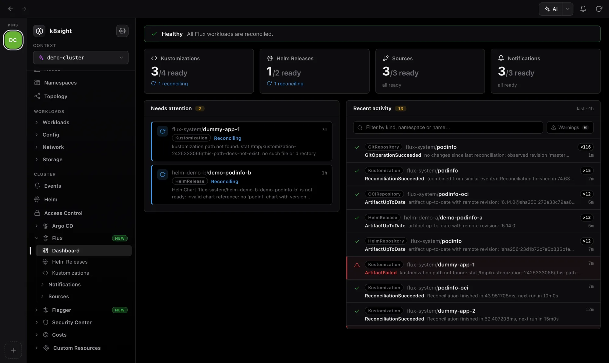
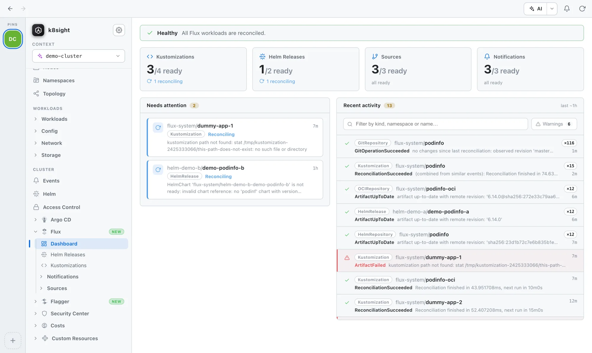
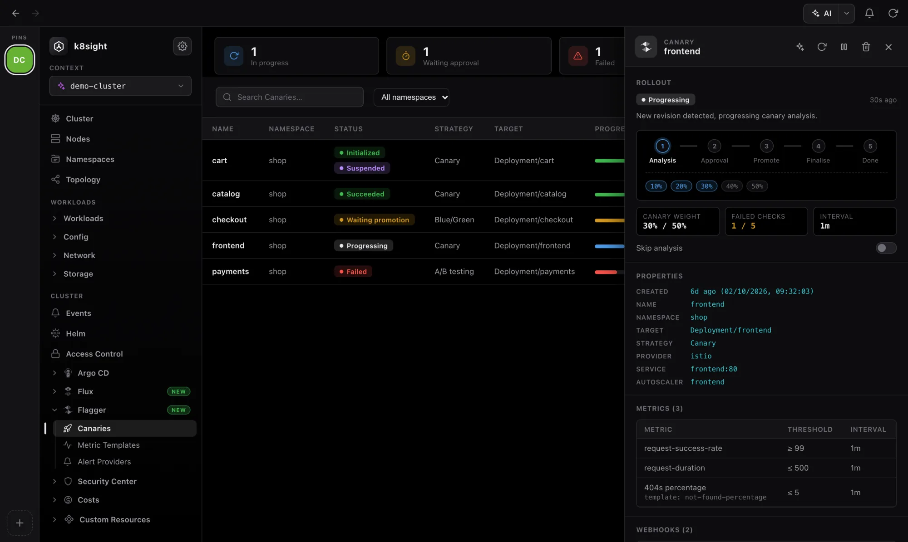
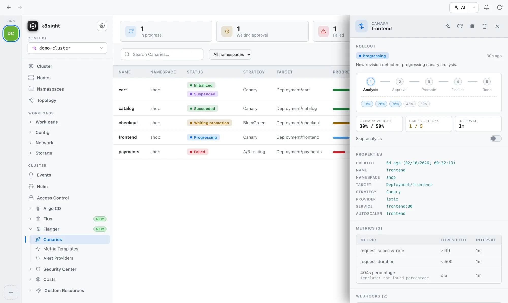

Flux CD and Flagger, built in
Running Flux? The app spots its CRDs and adds a Flux workspace next to the rest of your cluster. Add Flagger and you can watch canary releases shift traffic step by step. No flux CLI, nothing to install in the cluster, and it all runs on your kubeconfig’s own RBAC.


Every reconciliation, at a glance
Flux keeps your cluster in line with Git. k8sight shows whether it’s keeping up, and what to do when it isn’t.
Flux dashboard
Ready counts for Kustomizations, Helm releases, sources and notifications. A needs attention list shows what’s failing and why, and recent activity can be filtered down to warnings.
Every Flux kind
Kustomizations, HelmReleases, Git, OCI and Helm repositories, buckets, Helm charts, alerts, providers and receivers. Each list has status, source and revision columns.
Reconcile, suspend & resume
Reconcile now, pause or resume a resource, or delete it, from the row menu or the detail panel. Same result as flux reconcile, without the CLI.
What it manages
Open a Kustomization to see its conditions, source, last applied revision, the resources it owns (each one a click away) and its events.
Watch a canary roll out
Flagger moves traffic to a new version step by step, checking metrics as it goes, then promotes it or rolls it back. k8sight shows every Canary’s progress as it happens.


Live rollout timeline
Analysis, approval, promote, finalise, done. See each traffic step or test iteration, failed checks against the threshold, and a clear marker when a release rolls back.
Every strategy
Canary, A/B testing, blue/green and traffic mirroring, detected from each Canary’s analysis settings. A/B rules are shown as readable header and cookie matches.
Metrics, webhooks & alerts
Metric checks with their threshold ranges and templates, test and approval webhooks, alert providers, plus the primary deployment and services Flagger creates for you.
Restart, suspend & skip
Start a new analysis with a rollout restart of the target, suspend or resume a Canary, or turn on skipAnalysis to promote straight away.
AI-assisted triage
Hand a failing Kustomization or a stuck Canary to the assistant to find the likely cause and the next step (needs your own LLM subscription).
Try it in the demo
The built-in demo includes a podinfo Flux setup and five Flagger canaries. Restart one and watch it step through a full rollout.
Explore the other features
See it on your own cluster
Free and open source for macOS, Windows and Linux. No cluster handy? The built-in demo works with nothing but the app.